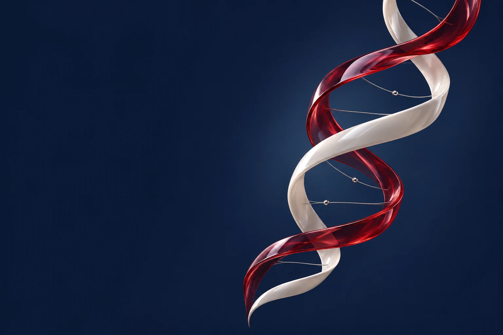
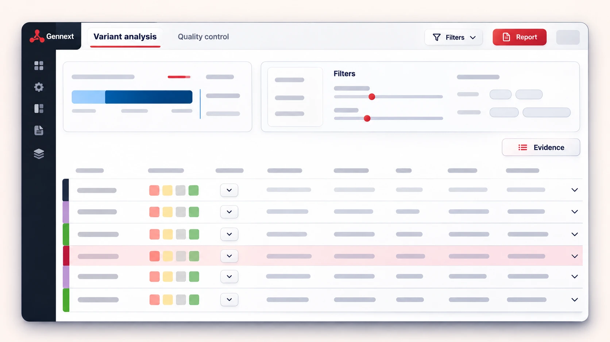

Kurum A
KURUMUN YEREL ALTYAPISI
Genomik veri→Worker Node→Analiz çıktısı
Veri ve hesaplama kurumda kalır

GENOMİK · BİYOİNFORMATİK · TEKNOLOJİ
Yazılım, hesaplama altyapısı ve eğitim çözümlerimizle genomik analiz süreçlerinizi destekliyoruz.
BİRBİRİNİ TAMAMLAYAN ÇÖZÜMLER
Dizileme verisinden rapora, kurum içi analiz sisteminden laboratuvar hizmetine: ihtiyacınız olan çalışma alanını keşfedin.
Dizileme veriniz var; işlenmesini, yorumlanmasını ve raporlanmasını istiyorsunuz.
Short-read ve long-read verileri için Gennext.Analizleri kendi kurumunuzun altyapısında yürütmek istiyorsunuz.
İş yükünüze göre yapılandırılan Worker Node.Genetik ve epigenetik değerlendirmeler için laboratuvar çalışmasına ihtiyaç duyuyorsunuz.
Microarray ve Nanopore uzun okuma dizileme.Varyant değerlendirme ve platform kullanımı konusunda bilgi edinmek istiyorsunuz.
Tıbbi genomik eğitimleri ve video kaynakları.Gennext, short-read ve long-read veri analizini varyant değerlendirme ve raporlamayla birleştirir. Klinik genomik ve longevity çalışmalarında kullanılır.

Klinik genomik için Gennext Clinical; genetik yatkınlık ve epigenetik değerlendirmeler için Gennext Longevity.
Gennext.bio’yu ziyaret edinFEDERE MİMARİ
Genomik girdiler ve analiz çıktıları atanmış yerel altyapıda işlenir. Merkezi hizmetler, kullanıcı erişimini ve analiz görevlerini koordine eder.
Kullanıcı erişimi · Görev atama · İşlem durumu
Analiz görevi ve durum bilgisi
KURUMUN YEREL ALTYAPISI
KURUMUN YEREL ALTYAPISI
KURUMUN YEREL ALTYAPISI
MULTİOMİK YAKLAŞIM
DNA, RNA, epigenetik işaretler, metabolitler ve lipitler biyolojinin farklı yönlerini yansıtır. Bu katmanları, çalışmanın yanıt aradığı soru etrafında birlikte değerlendiriyoruz.
Genetik varyantlar ve genomun yapısı.
Gen ifadesi ve RNA düzeyindeki değişimler.
DNA metilasyonu gibi düzenleyici işaretler.
Metabolik süreçleri yansıtan küçük moleküller.
Lipitlerin bileşimi ve biyolojik ilişkileri.
Veri türleri ve analiz kapsamı, çalışmanın bilimsel sorusuna göre birlikte belirlenir.
LONGEVITY LABORATUVARI
Microarray ile genotipleme ve DNA metilasyonu, Nanopore ile uzun okuma dizileme. Laboratuvar altyapımızı longevity çalışmalarımızla birleştiriyoruz.
Laboratuvarı keşfedinGENNEXT
Platformu tanıtım videomuzda keşfedin. Kullanım eğitimleri ve analiz iş akışları için Gennext Community kanalımızı ziyaret edin.
GENIVA HAKKINDA
Geniva olarak genomik analiz için yazılım, altyapı ve laboratuvar deneyimini bir araya getiriyoruz. Bilimsel yaklaşımımız transkriptomik, epigenetik, metabolomik ve lipidomik verileri de kapsıyor.
Geniva’yı tanıyınYazılım, altyapı ve eğitim ihtiyaçlarınızı konuşalım.